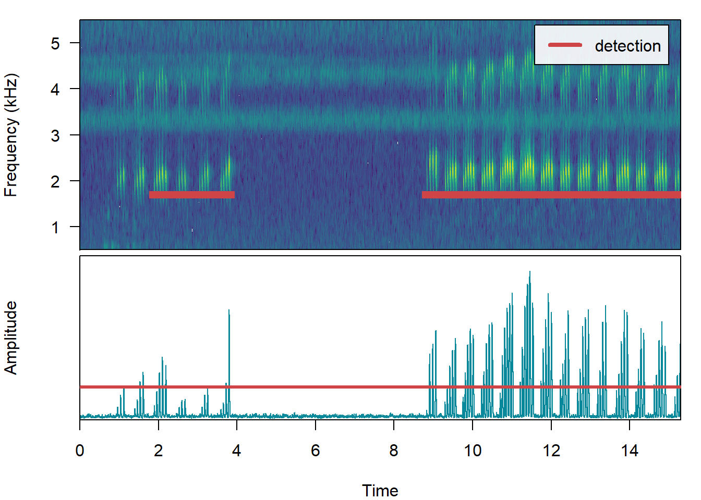

source(here::here("R", "00_functions_packages.R"))Initial exploration
Background
This project leverages a unique validation dataset collected from automated camera traps mounted on raptor poles in Taiwan. The dataset captures several banded Eastern Grass Owls (Tyto longimembris) engaging in vocal behavior directly in front of the camera.
Because each video provides simultaneous visual confirmation of individual identity (via band numbers) and acoustic recordings of their calls, this dataset serves as an ideal empirical baseline to test vocal individuality.
To evaluate the feasibility of acoustic individuality tracking before scaling to a island-wide monitoring network, we established a prototype pipeline using 5 distinct, visually identified owls. If their acoustic features cluster reliably, it confirms that deep-learning feature extraction can be used for passive, non-invasive individual tracking.
Functions and packages
Extract audios from video
video_root <- "E:/2026_eastern_grassowl_Taiwan/TAIGA_video"
folder_list <- list.dirs(path = video_root,
full.names = TRUE,
recursive = FALSE)dir_tree(video_root, recurse = FALSE)E:/2026_eastern_grassowl_Taiwan/TAIGA_video
├── 土庫北A89
├── 土庫南A50
├── 有利A84
├── 順揚有利172
└── 順揚有利R19video_summary <- tibble(folder_path = folder_list) %>%
mutate(folder_name = basename(folder_path),
total_videos = map_int(folder_path,
~{list.files(path = .x,
pattern = "\\.mp4$",
recursive = TRUE,
ignore.case = TRUE) %>% length()})) %>%
select(folder_name, total_videos)
knitr::kable(video_summary, col.names = c("Site / Owl Folder", "Total Audio Files (.mp4)"))| Site / Owl Folder | Total Audio Files (.mp4) |
|---|---|
| 土庫北A89 | 16 |
| 土庫南A50 | 18 |
| 有利A84 | 16 |
| 順揚有利172 | 20 |
| 順揚有利R19 | 19 |
The extract_audio_files() function extract the audio from the raw camera trap videos and saves it as .wav audio files. It automatically recreates the exact same folder structure inside your audio folder to keep everything organized. If the function sees that a video’s audio has already been extracted, it simply skips it. This means you can run this function whenever you add new videos from the field, and it will only process the brand-new files without wasting time re-doing the old ones.
extract_audio_files(video_root)The build_audio_metadata() function gathers and organizes all the technical details from the files into a clean table. It looks inside the video and audio folders, pulls out background information (like recording dates, file sizes, and audio quality), and safely handles missing audio files without crashing. Finally, it reads your folder names to automatically figure out which owl ID and study site the files belong to, giving you a tidy spreadsheet ready for analysis.
metadata_all <- build_audio_metadata(video_folder = "E:/2026_eastern_grassowl_Taiwan/TAIGA_video",
audio_folder = "E:/2026_eastern_grassowl_Taiwan/TAIGA_audio")head(metadata_all)# A tibble: 6 × 10
owl_id site datetime duration sampling_rate channels bit_depth format
<chr> <chr> <chr> <int> <int> <int> <int> <chr>
1 A89 土庫北 2025-07-23 19:… 15333 44100 1 16 " PCM"
2 A89 土庫北 2025-07-23 21:… 15333 44100 1 16 " PCM"
3 A89 土庫北 2025-08-07 19:… 15333 44100 1 16 " PCM"
4 A89 土庫北 2025-08-07 19:… 15333 44100 1 16 " PCM"
5 A89 土庫北 2025-08-14 19:… 15333 44100 1 16 " PCM"
6 A89 土庫北 2025-02-07 03:… 15333 44100 1 16 " PCM"
# ℹ 2 more variables: filepath_video <chr>, filepath_audio <chr>tail(metadata_all)# A tibble: 6 × 10
owl_id site datetime duration sampling_rate channels bit_depth format
<chr> <chr> <chr> <int> <int> <int> <int> <chr>
1 R19 順揚砂石場 2024-09-07… 15333 44100 1 16 " PCM"
2 R19 順揚砂石場 2024-12-01… 15333 44100 1 16 " PCM"
3 R19 順揚砂石場 2024-12-18… 15333 44100 1 16 " PCM"
4 R19 順揚砂石場 2024-12-19… 15333 44100 1 16 " PCM"
5 R19 順揚砂石場 2024-12-29… 15333 44100 1 16 " PCM"
6 R19 順揚砂石場 2025-01-01… 15333 44100 1 16 " PCM"
# ℹ 2 more variables: filepath_video <chr>, filepath_audio <chr>Check the recordings from each owl / site combination
metadata_all %>%
group_by(owl_id, site) %>%
summarize(audios = n())# A tibble: 8 × 3
# Groups: owl_id [5]
owl_id site audios
<chr> <chr> <int>
1 172 有利砂石場 1
2 172 順揚砂石場 19
3 A50 土庫南 18
4 A84 有利 16
5 A89 土庫北 16
6 R19 有利砂石場 9
7 R19 非蟲叫 2
8 R19 順揚砂石場 8Check the hours that owl got recorded. Only after 6pm, and before 5am.
metadata_all$datetime %>%
hour() %>%
unique() %>%
sort() [1] 0 1 2 3 4 5 18 19 20 21 22 23Save this cleaned metadata for later use
write_csv(metadata_all, here("data", "taiga_audio_metadata_5_owls.csv"))Energy based sound event detection
While we evaluated template-based detection methods, the high variability in the owls’ call notes made it difficult to establish a single matching template. Consequently, we opted for an energy-based detection approach, which is much better suited for capturing these dynamic signal variations.
audio_data <- read_csv(here("data", "taiga_audio_metadata_5_owls.csv")) Set some detection parameters. Tested with various thresholds. Seems like 20 provided the best results. Take one audio to check.
audio_file <- audio_data$filepath_audio[48]
threshold_detection <- 20The energy detector isolates signals above our threshold within a 1–5 kHz frequency band, targeting the specific vocal range of the Eastern Grass Owl. We applied a 500 ms smoothing window to bridge brief drops in signal intensity, and used a hold-time parameter to merge short, closely spaced detections into a single call sequence.
detection <- energy_detector(files = basename(audio_file),
path = dirname(audio_file),
bp = c(1, 5),
threshold = threshold_detection,
smooth = 500,
hold.time = 1500)
sound <- readWave(audio_file)
label_spectro(wave = sound,
detection = detection,
envelope = TRUE,
threshold = threshold_detection,
flim = c(0.5, 5.5))
Detections were padded to lengths of exact 3-second multiples (3, 6, 9, 12, or 15 seconds) to align with the fixed 3-second analysis window utilized by BirdNET. This step ensures that every target signal is perfectly contained within the model’s expected input structure.
detection_padded <- extract_audio_events(audio_file,
threshold_detection = threshold_detection,
visualize = FALSE)detecting sound events (step 0 of 0):sound <- readWave(audio_file)
label_spectro(wave = sound,
detection = detection,
reference = detection_padded,
envelope = TRUE,
threshold = threshold_detection,
flim = c(0.5, 5.5))
Extracting all
Analytical Workflow
The automated pipeline processes the data through four major sequential stages:
- Audio Extraction Demuxing raw
.mp4camera trap footage into high-fidelity, uncompressed.wavaudio tracks to preserve structural call characteristics. - Vocalization Segmentation (
ohun) Isolating target vocalizations using amplitude envelope smoothing. Detections are dynamically padded into symmetric, centered intervals matching perfect multi-multiples of BirdNET processing constraints (3s, 6s, 9s). - Deep Feature Extraction (BirdNET) Passing the isolated clips through the BirdNET architecture to capture a 1024-dimensional acoustic fingerprint (feature embeddings) for every vocal event.
- Multivariate Space Mapping Applying unsupervised dimensionality reduction (UMAP) and distance-metric clustering to determine if the acoustic structures group cleanly by their visually verified band numbers.
Running Code
When you click the Render button a document will be generated that includes both content and the output of embedded code. You can embed code like this:
1 + 1[1] 2You can add options to executable code like this
[1] 4The echo: false option disables the printing of code (only output is displayed).